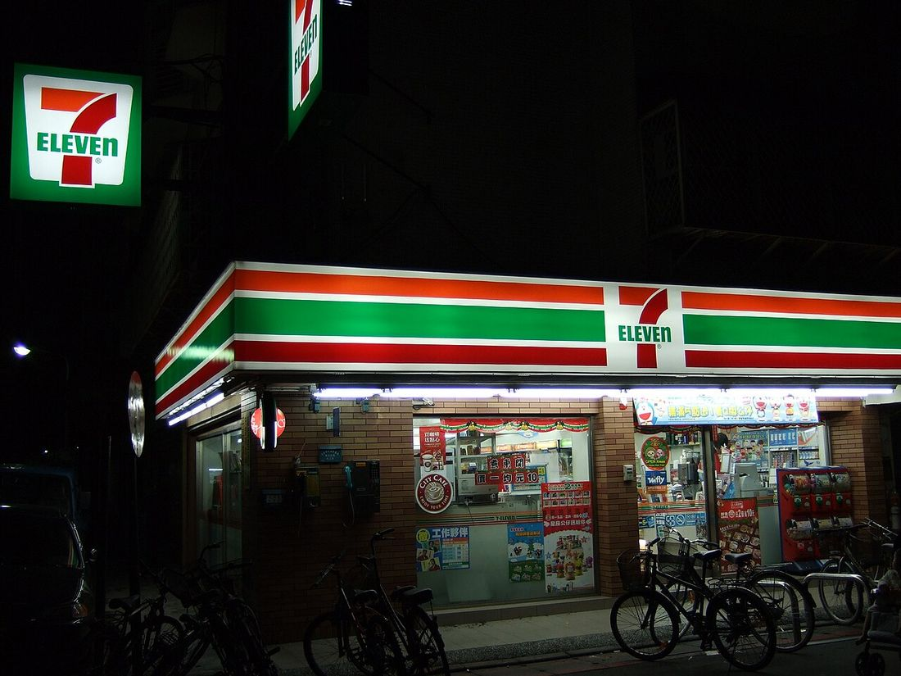
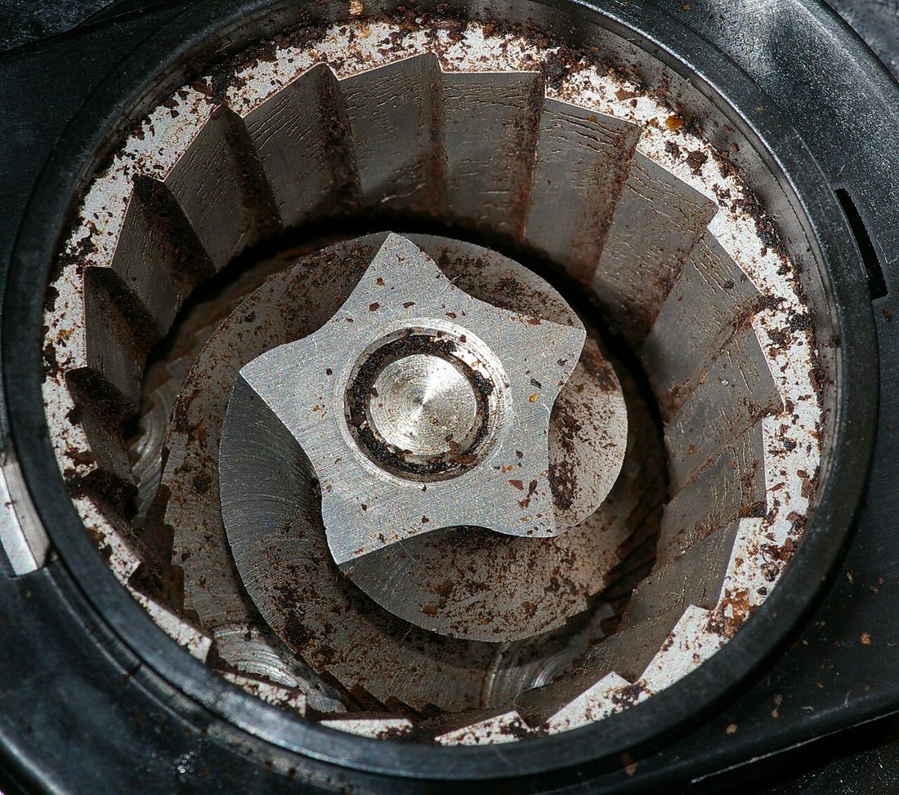

台北老店．城市日常
CITY CAFE
你每天買的超商咖啡，其實失敗過兩次。

第一次：倒掉的比賣掉的多
一九八五年，統一超商參考美國經驗，在門市放現煮咖啡讓客人自己倒。前總經理徐重仁笑說：「倒掉的咖啡比賣出去的還多。」
第二次：街角咖啡館
二〇〇一年再推「街角咖啡館」，市場反應還是不好，很快收掉。
第三次：CITY CAFE
二〇〇四年第三次出手，品牌叫 CITY CAFE，找桂綸鎂代言，標語是「整個城市，就是我的咖啡館」。
・二〇一五年：營收第一次突破 100 億元
・二〇一九年報導：一年 3.2 億杯，平均每秒 10 杯
・二〇二三年：營收超過 170 億元
專業點：全自動咖啡機
・從磨豆到萃取，按一個鍵完成
・豆子磨成粉後，香氣分子容易揮發、氧化更快
・專家說：買一台磨豆機，勝過買一包高級咖啡粉
老照片與街景


店家資訊
- 店家
- 7-ELEVEN CITY CAFE
- 地點
- 全台門市
- 現況
- 到處都有
- 營業時間
- 常有變動，出發前請再確認
- IG 影片
- 1/12 上片
你超商咖啡都點什麼？美式還是拿鐵？
到 IG 留言告訴我們
到 IG 留言告訴我們